Générez un CV professionnel adapté au marché africain et international en quelques minutes, avec l'aide de l'IA.
Sidebar, minimaliste, créatif, corporate — un style pour chaque métier et chaque pays.
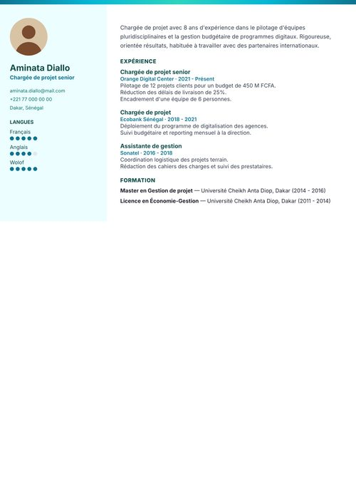
Bandeau Dégradé Teal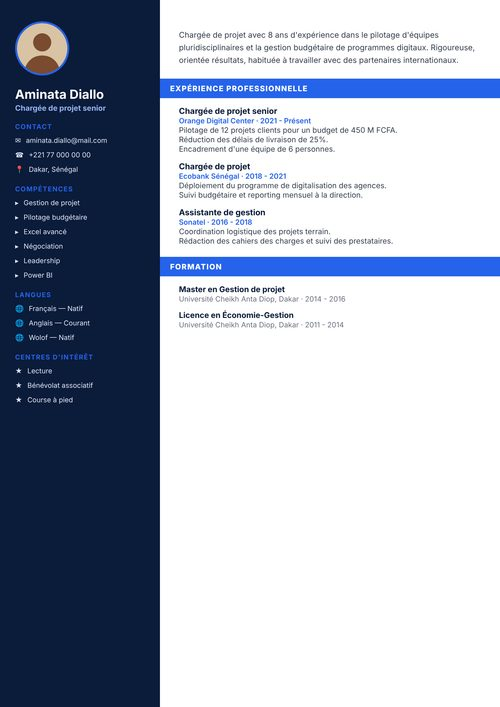
Bannières Bleues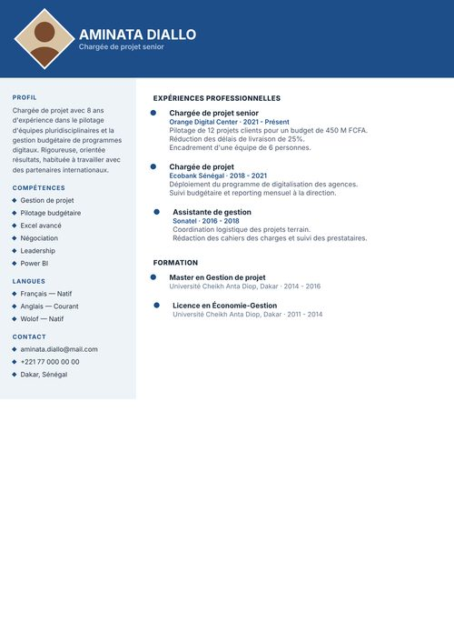
Timeline Immobilier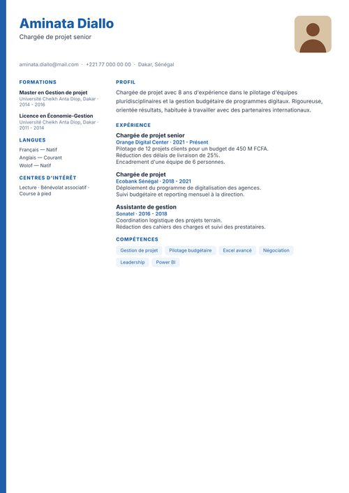
Bloc Vertical Bleu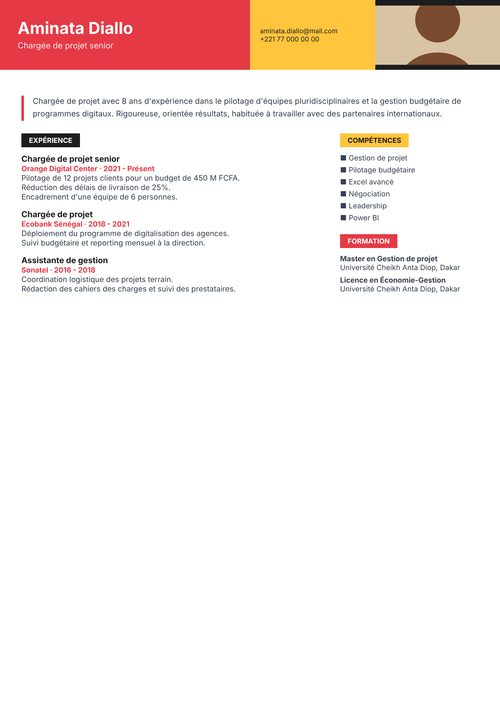
Grille Bauhaus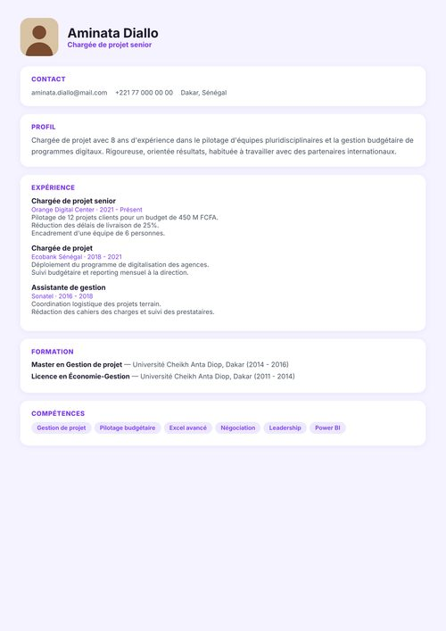
Cartes Empilées Lavande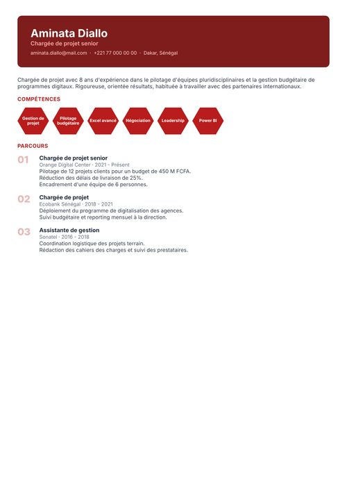
Hexagones Compétences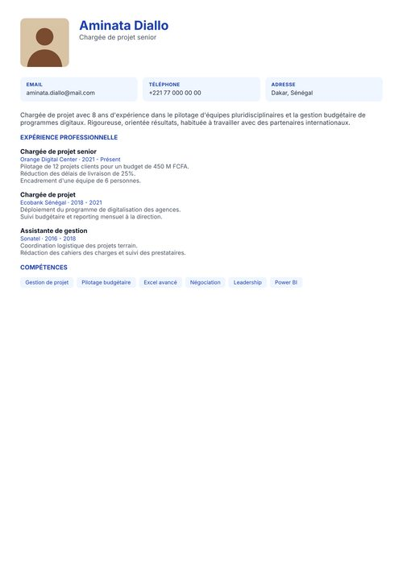
Grille Carrée Photo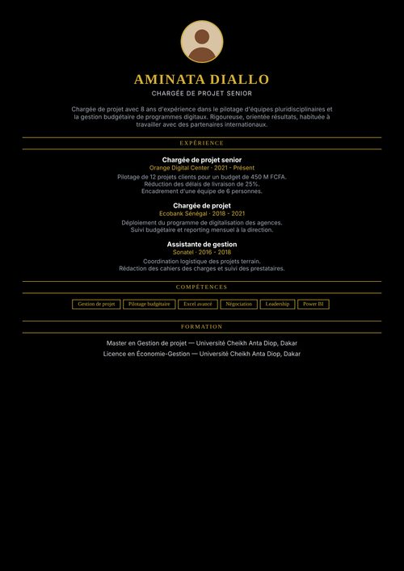
Noir Or Bandeaux Luxe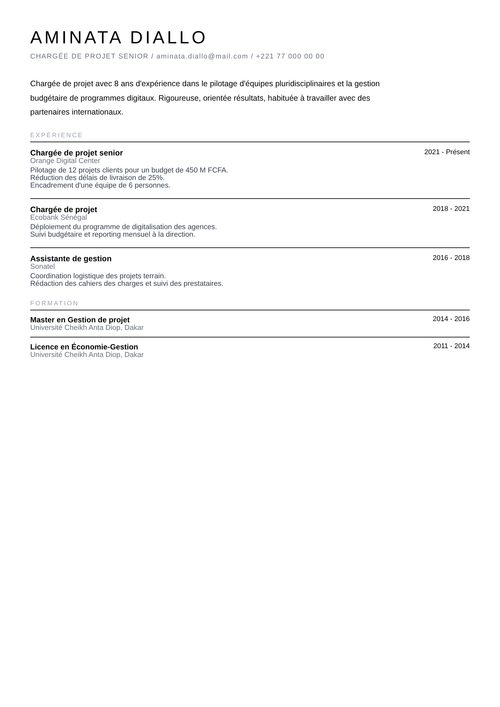
Trait Fin Minimal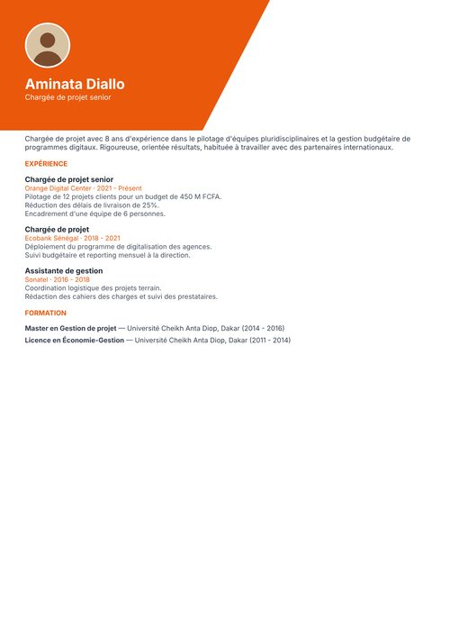
Diagonale Orange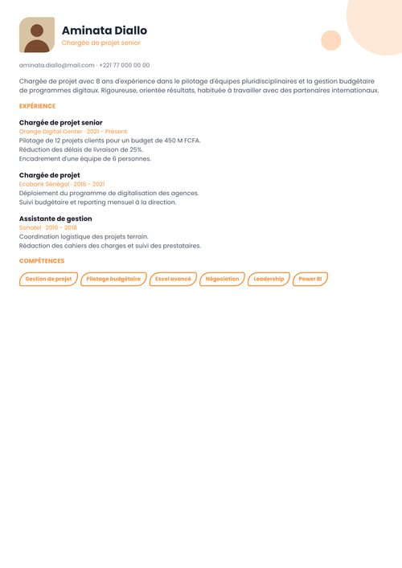
Formes Ludiques Cercles
Améliore votre résumé, vos missions, et génère une lettre de motivation en un clic.
Des styles africains, européens et créatifs, tous personnalisables.
Vérifiez en temps réel que votre CV passe les filtres de recrutement automatiques.
Créez et modifiez votre CV aussi facilement sur téléphone que sur ordinateur.
Téléchargez votre CV dans le format dont vous avez besoin, prêt à envoyer.
Retrouvez tous vos CVs, sur tous vos appareils, à tout moment.
Sélectionnez parmi 44 designs et votre couleur préférée.
Suivez le guide en 7 étapes, ou laissez l'IA vous aider.
Exportez en PDF ou Word, prêt à postuler.
3 requêtes IA/jour · Export PDF
20 requêtes IA/jour · PDF + Word
IA illimitée · Lien de partage
Tout Premium + Accès API